Nehru Stadium
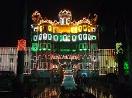 Rajwada is a historical palace in Indore city. It was built by the Holkars of the Maratha Empire about two centuries ago. This seven storied structure is located near the Chhatris and serves today as a fine example of royal grandeur and architectural skills.
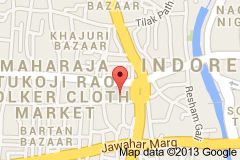
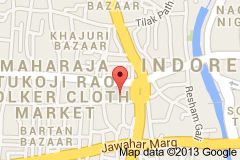
BasketBall Club(BBC)
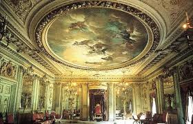Lal Baag Palace is one of the most spectacular buildings in Indore. It stands on the outskirts of the town, towards the southwest. It is a three storey building on the bank of the River Khan. The palace was built by Maharaja Shivaji Rao Holkar during 1886-1921. Situated amidst dry and dusty gardens, it is architecturally quite similar to the New Palace. Lal Bagh Palace once hosted many royal receptions and even today, reflects the life style and taste of the Holkar Rulers.
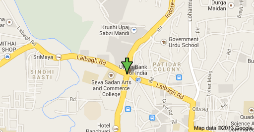
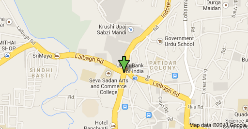
Holkar Cricket Stadium
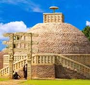 Sanchi is a small village in Raisen District of the state of Madhya Pradesh, India, it is located 46 km north east of Bhopal, and 10 km from Besnagar and Vidisha in the central part of the state of Madhya Pradesh. Known for its "Stupas", it is the location of several Buddhist monuments dating from the 3rd century BCE to the 12th CE and is one of the important places of Buddhist pilgrimage. It is a nagar panchayat in Raisen district in the Indian state of Madhya Pradesh. Toranas surround the Stupa and they each represent love, peace, trust, and courage. This world heritage site is well maintained and is open to public viewing from 8:00 AM to 5:00 PM. It takes about an hour and a half for a non-research visit of the site. Photography is allowed and audio guides are available.
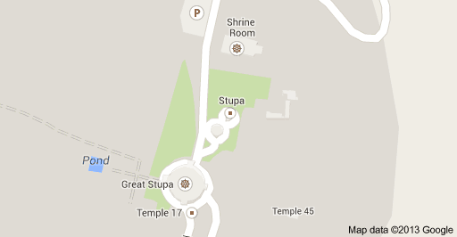
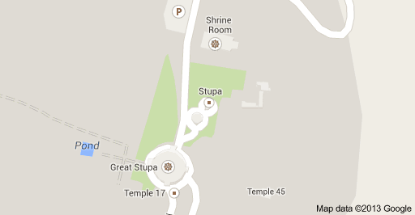
Indore Tennis Club(ITC)
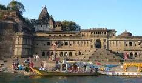 Maheshwar is a City in Khargone district of Madhya Pradesh state, in central India. It is located 13 km east of National Highway 3 (Agra-Mumbai highway) and 91 km from Indore, the commercial capital of the state. The City lies on the north bank of the Narmada River. It was the capital of the Malwa during Holkar reign till 6 January 1818, when the capital was shifted to Indore by Malhar Rao Holkar III.
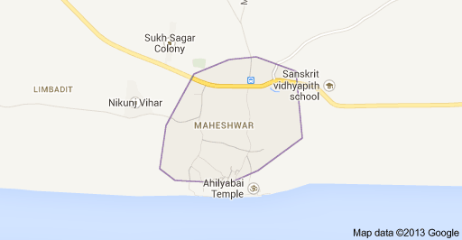
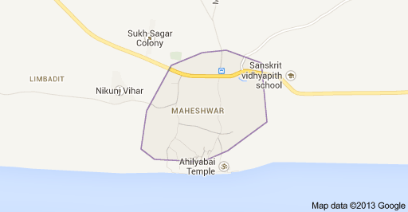
Abhay Prashal